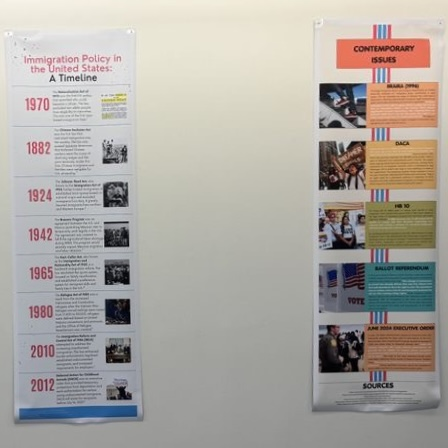

Gallery





Established in 2008, SUIE’s vision is to empower, inform, and activate the immigrant community, its allies, and the greater public about the issues that prevent immigrants in the United States from being able to enjoy the protection of basic human rights granted under the U.S. Constitution. We advocate for immigrant issues to be recognized as human rights issues through the promotion of the ideals that stress equality of all people regardless of national origin or documentation status.
Most members become involved through joining us for our General Body Meetings, which are composed of social and informative sessions! We aim to have at least three General Body Meetings thoroughout the semester. If you are unable to join us at our General Body meetings, there are other ways to remain involved throughout the semester! Below are some ways you can become involved!